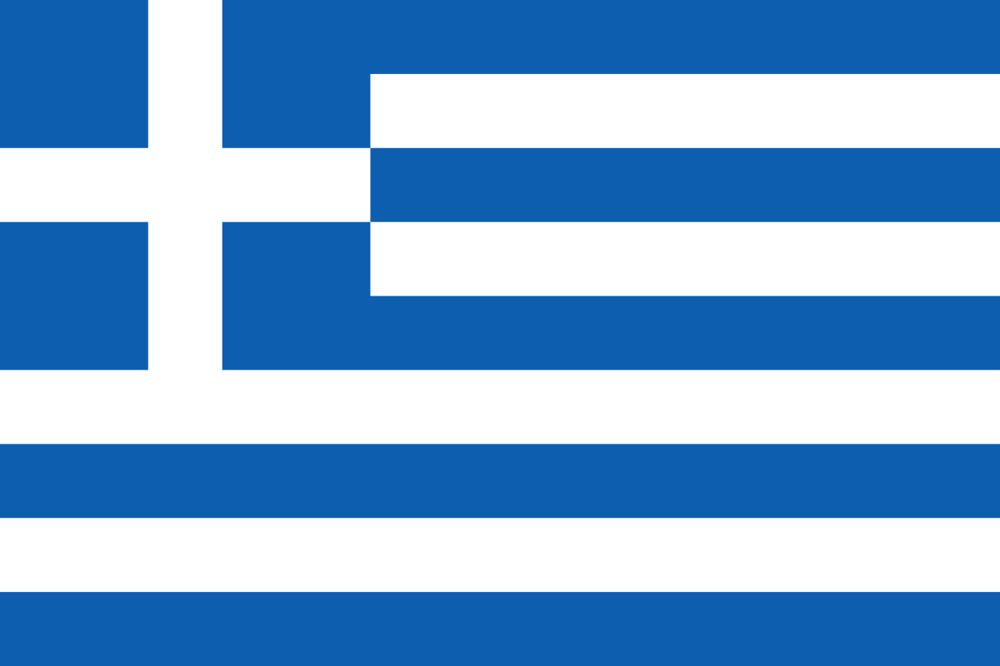

 Řecko je země v jihovýchodní Evropě, která se skládá z pevninské části a tisíců ostrovů v Egejském, Jónském a Středozemním moři. Je známé svou bohatou historií, kulturou, mytologií a architekturou. Řecko je považováno za kolébku západní civilizace, demokracie, filozofie, vědy, umění a sportu. Hlavním městem Řecka je Athény, kde se nachází slavné památky jako Akropolis, Parthenon a Olympijský stadion. Řecko je také oblíbenou turistickou destinací, která nabízí krásné pláže, malebné vesnice, úchvatné přírodní scenérie a lahodnou kuchyni.